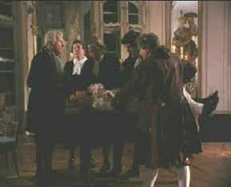

| Mesmer/C,C+ |
| Image/1994/106/FS 1.33 |
It just ain't mesmerizing: Mesmer, the movie, that is. This is the story of 18th century physician Franz Anton Mesmer, who unorthodox practices caused quite a stir in Austria and Paris. Mesmer, as depicted in this sluggish biopic, believed in the powers of "animal magnetism," which from what I gathered from film is a harnessing and transference of energy from one source to another. Doctors of his time took every opportunity to bleed a patient for a variety of ails. Mesmer's mystical methods did not sit too well with his erstwhile colleagues. He suffered ridicule, ostracization, and finally out-right banishment from his home land. Even as detailed in Mesmer, the results of the good meaning doctor's work are in question. There is no question that he was able to enrapture his patients into a state near hysteria, but the did he cure a blind woman and straighten the backs of peasants burdened by their lot or alleviate the pain of painted French ladies of court? The answers, my friends, are not to found in this well-intentioned, but workmanlike film.
|
 |
|
Mesmer defends a patient from the doctors. ©Image |
Alan Rickman
gives it his all as Mesmer, pursing his lips with determination,
scrunching his forehead to summon all his bodily energy, and
waiving his arms to call on the energy of animal magnetism to
stimulate a cure for those he is treating. Some of the
supporting roles are stiffly portrayed and some of the hysteria
borders on laughable. But Mesmer counts on Rickman to do
the mesmerizing, and while he is solid, he lacks the flamboyance
to bring the character to big screen life.
Roger Spottiswoode directs in an
even-handed manner. The film plays rather at one tone
throughout. Production design, aside from some wonderful
European buildings, is mundane. The photography is lackluster.
Much
of Mesmer is shot in dark interiors attempting to
replicate the natural light sources of the time. The DVD does a
reasonable job of producing enough light output to accurately
capture the feeling. Colors are generally muted. Some scenes are
slightly soft, likely owing to the original transfer elements.
Shadow detail is somewhat murky, again, most likely caused by
the style of photography. Some dialogue, especially Mesmer's
mutterings when incanting over a patient, is difficult to
understand. Other than that, the Dolby 2.0 Digital surround does
a pretty good job with the music.

Selections from the feature archive
include articles on
Akira Kurosawa, Frank
Darabont, Blonde
Bimbos, Hollywood
Street Gangs, or Vietnam:
The Hollywood Pariah, and many more....

Hail, Hail, the Gangs in Hollywood
From Angels with Dirty Faces to West Side Story to Menace II Society, Hollywood has depicted youth gangs as reflections of the times.

They may
be judgmental, but that's the point, isn't it. Lots of DVD reviews
plus news and more.
Click on the link to visit the judge's chambers.
 Gary
Morris's insightful publication Bright Lights Film Journal
turns the celluloid in films from a unique perspective. Click on the image above for more pure movie views.
Gary
Morris's insightful publication Bright Lights Film Journal
turns the celluloid in films from a unique perspective. Click on the image above for more pure movie views.
shopforacomputer.com
Offering
home theater and DVD links, photos, product reviews, on-line
purchasing information and top-brand comparison shopping.

April 19, 2000
Click on
the DVD MIA symbol for profiles of DVDs missing in action.
Add films to the DVD
MIA Master List by
filling out a simple form. Click
Here